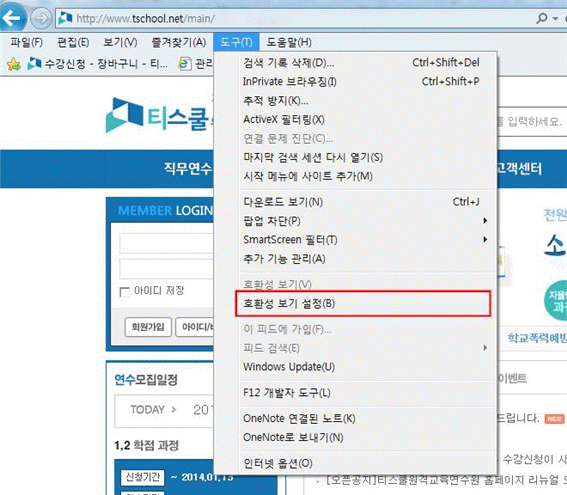
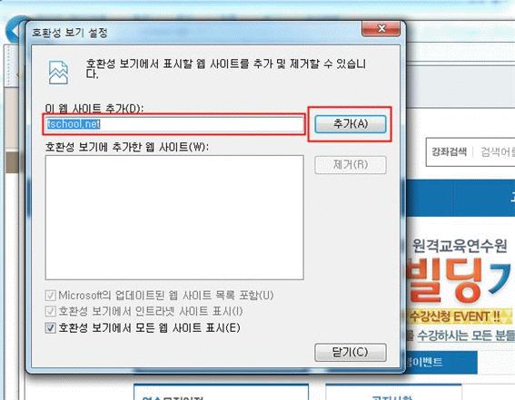
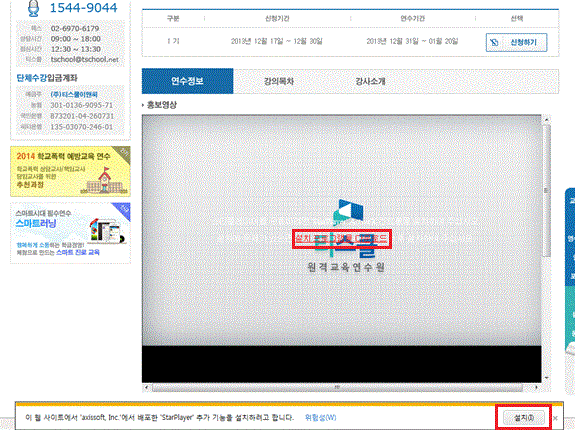
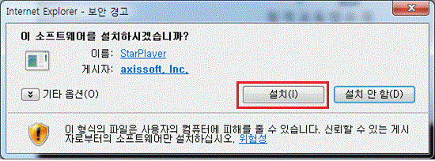
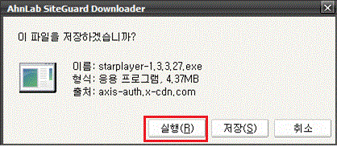
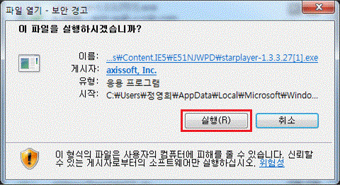
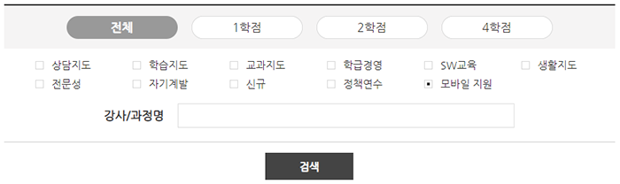

자주묻는 질문
홈 > 연수지원 > 자주묻는 질문
- 전체
- 회원가입
- 연수신청
- 학습
- 평가
- 모바일
- 이수보고
- 증명서
- 기타
- 회원가입은 어떻게 하나요?
-
- ① 회원 로그인 창에 있는 [회원가입] 을 클릭합니다.
- ② 회원구분 및 약관을 체크하시고 휴대폰 인증 또는 아이핀으로 본인인증을 해주세요.
(티스쿨은 개인정보보호법에 따라 주민등록번호를 수집하지 않습니다.) - ③ 필수입력항목을 모두 입력하신 후 [다음]버튼을 누르면 회원가입이 완료됩니다.
- 학교 등록이 안 되어 있습니다.
-
신설된 학교이거나 학교명이 변경된 경우 학교가 등록되어 있지 않을 수도 있습니다.
연수원으로 연락 주시면 바로 등록해 드리겠습니다. (TEL: 1544-9044) - 회원정보를 변경하고 싶습니다.
- 회원 로그인 박스에 있는 [회원정보 수정] 을 클릭하시거나, 상단 [나의강의실]의 회원정보수정 메뉴를 클릭하시면 개인정보를 변경하실 수 있습니다.
- 아이디와 비밀번호를 찾고 싶습니다.
-
회원 로그인 박스에 있는 [아이디/비밀번호 찾기]를 클릭하시면 ID/PW 찾기 페이지로 이동합니다.
본인인증 진행 후 아이디 또는 비밀번호를 찾으실 수 있습니다. - 회원탈퇴는 어떻게 하나요?
-
상단 [나의강의실]의 [회원탈퇴]를 클릭해주세요.
- ※ 연수 이력이 있을 경우 수강신청, 영수증, 이수증 출력 등 로그인이 필요한 모든 서비스를 이용하실 수 없습니다.
- 휴면회원은 무엇인가요?
-
휴면회원은 1년 이상 서비스를 이용하지 않은 회원으로 정보통신망 이용촉진 및 정보보호 등에 관한 법률 제 29조(개인정보의파기) 2항에 의하여 개인정보가 분리 보관된 회원입니다.
- ※ 관련 법에 따라 현행 개인정보 유효기간은 1년이나 이용자의 요청 시 예외적 1년 이외 기간 설정 가능합니다. 개인정보 유효기간을 3년 이상으로 설정 시, 장기 미접속에 따른 휴면계정 및 자동 탈퇴를 방지할 수 있습니다. (별도 미설정 시 관련법에 따라 미로그인 1년 경과 시 이용자의 개인정보는 별도 보관됩니다.)
- 연수신청은 어떻게 하나요?
-
- ① ID, 비밀번호 입력하여 로그인
- ② 상단에 직무연수 클릭, 연수신청 메뉴에서 과정리스트에서 연수이름 혹은 [신청하기]버튼 클릭
- ③ 연수과정안내 확인 후 원하는 날짜/기수를 확인한 뒤에 [신청하기] 버튼 클릭
- ④ 장바구니로 이동 후, 최종 수강 하시려는 과정 및 금액을 확인
- ⑤ 결제 방법(신용카드/계좌이체, 무통장입금 등) 선택 후 하단 [결제하기] 버튼 클릭
* 카드결제/가상계좌 입금시 즉시 승인되며 무통장 입금 시에는 입금 확인 후 승인 처리됩니다.
- 연수비는 어떻게 결제하지요?
-
- ① 카드결제
- - 사용하실 카드에 따른 결제방법을 선택하여 결제합니다.
- - 카드번호와 비밀번호를 정확히 입력하셔야 합니다.
- - 카드별로 요구하는 비밀번호/ISP/공인인증서 등이 다르므로 해당 카드사로 문의바랍니다.
- ② 계좌이체
- - 이체하실 은행과 계좌 번호를 입력하신 후 결제 합니다.
- - 계좌 정보와 비밀번호 보안카드 정보, 공인인증서 정보를 정확히 입력하셔야 합니다.
- ③ 무통장입금(가상계좌)
- - 가상계좌란 직접 선택하신 은행으로 입금하실 새로운 가상의 계좌번호를 말합니다. 생성된 가상계좌는 7일이내 입금하시지 않으면 계좌가 자동 삭제됩니다.
- - 생성된 계좌번호로 결제 금액을 정확하게 입금(폰뱅킹/인터넷뱅킹/은행방문 등)해주시면 됩니다.
- ① 카드결제
- 연수신청을 했는데 신청이 제대로 되었는지 어떻게 확인하죠?
-
연수 신청하신 내역은 로그인 후 나의 강의실에서 확인하실 수 있습니다.
수강신청 이후부터 수강료 납부 이전에는 [대기중인 강좌]에, 수강료를 납부하시면 연수원에서 이를 확인하여 [수강 중인 강좌]에 등록합니다. 그리고 강좌 개시일 시점부터 수강하실 수 있습니다. - 다른 연수와 중복될 경우 허용 범위를 알고 싶습니다.
-
<연수 기간 중복 허용>
같은 기간 동안 2개 이상 연수과정을 이수하여도 전부 인정
- 같은 기간 중에 다양한 원격연수과정 수강 가능
- 현실적으로 불가능한 경우는 제외
- ※ 기존에는 학기 중 기간 중복의 경우 1강좌만 인정하고, 방학기간 중에는 2강좌만 허용하였으나, 연수기간에 관계없이 이수한 모든 과정을 허용
- ※ 기존의 기간 중복 금지는 2013.12.31. 까지 받은 연수에 적용하고, 2014. 1월 이후 개설되는 연수과정부터 기간 중복 금지 폐지
<동일 · 유사과정>
동일 · 유사과정 중복 : (원칙) 2강좌 중 1강좌 인정- - 2개 강좌명이 동일·유사하여도 해당 연수과정표 등을 통해 과목의 70%이상 다른 과정임을 증명할 경우 2강좌 모두 인정(연수생 입증책임)
- 교사만 들을 수 있나요? (휴직 중의 교원, 기간제교원, 일반인)
-
- ① 직무연수
- - 직무연수 과정의 경우, 교육공무원승진교정에 의거 연수학점이 승진평점에 반영되므로 현직교사만 이수가 가능합니다. 교사가 아니거나 휴직 중의 교사, 기간제 교사의 경우 학점이수가 불가능합니다.
- - 학점이수와 상관없는 일반인의 경우 수강을 원하면 가능합니다.
- ② 자율연수
- - 학점이 없는 강좌로 대상 구분 없이 모두 신청 가능합니다.
- ① 직무연수
- 연수 취소 및 환불 규정을 알려주세요.
-
연수/취소 및 환불에 대한 정책은 아래와 같습니다.
- 1. 연수 취소 가능 기간
- - 연수 시작일로부터 7일 이내
2. 환불규정취소시점 환불금액 기타 결제 승인 전 전액 교재를 받으신 경우 반송 확인 후
처리됩니다.연수 시작전 전액 환불 연수 시작 7일 이내 80% 환불 연수 시작 7일 이후 환불 불가
- 3. 연수 환불 일정
- - 카드 결제/계좌이체 결제: 교재 반송 확인 후 즉시 취소
- - 가상계좌/무통장 입금: 교재 반송 확인 후 매주 화요일, 목요일 환불 처리
- 4. 연수비 환불 안내
- - 카드결제: 결제하셨던 카드의 결제 취소로 7일 이내 처리됩니다.
- - 계좌이체 결제 : 결제하셨던 계좌로 7일 이내 환불 처리됩니다.
- - 가상계좌/무통장 입금: [수강취소]게시판에 입력해주신 환불 계좌로 7일 이내 입금 처리됩니다.
- 5. 교환/반품
- - 교재 및 상품 교환/반품 접수는 고객센터(1544-9044)를 이용해주세요.
- - 단순변심에 의한 교환/반품 접수 시에는 택배 비용은 선생님께서 부담해 주셔야 하며 오배송, 품질 불량의 경우에는 연수원에서 부담합니다.
- - 교환/반품 접수 시 4일 내에 택배회사에서 방문하여 회수되며, 교환/반품에 필요한 택배 비용은 선생님 부담입니다.
- - 선생님의 책임 있는 사유로 상품 등이 훼손된 경우에는 반품이 불가하며 상품 비용 차감 후 환불 처리됩니다.
- - 이벤트 선물 수령 후에는 선물 비용 차감 후 환불됩니다.
- 1. 연수 취소 가능 기간
- 연수 연기신청은 어떻게 해야 하나요?
-
신청한 연수 진행이 어려울 경우 [수강연기] 페이지에서 변경할 기수를 선택하여 기수 연기가 가능합니다. (교육청 단체연수는 게시판으로만 연기 신청이 가능합니다.)
기수 변경 방법- ① [나의 강의실]메뉴의 [수강연기]를 클릭하세요.
- ② 즉시수강연기하기 연수정보에 변경할 기수를 선택해주세요.
- ③ 기수 및 수강일정 확인 후 [변경]버튼을 클릭해주세요.
- - 수강 기수 변경은 동일 과정으로만 가능하며, 이전 진도/과제/시험 응시 내역은 모두 초기화됩니다.
- - 수강 기수 변경은 연수 종료일 전 총 3회 까지만 가능합니다.
- 연수를 할인 받을 수 있나요?
-
연수비 할인은 아래의 경우에만 가능합니다.
- ① 포인트 할인
로그인, 연수신청, 후기작성 등으로 인하여 적립된 포인트는 10점부터 사용이 가능합니다. - ② 단체수강 할인
단체수강 이벤트를 통하여 인원수에 따라 할인율이 달라집니다.
단체수강 이벤트 내용에 따라 할인율 및 선물이 달라지기 때문에 이벤트 페이지를 확인해주세요. - ③ 재수강 할인
연수를 신청하시어 20% 재수강 할인 쿠폰이 발급됩니다. 할인 쿠폰은 연수 종료일 3일전부터 자동 발급되며 유효기간은 6개월입니다.
- ① 포인트 할인
- 연수 지명 번호는 무엇인가요?
-
2007년 3월 1일부터 각 학교마다 연수지명 명부를 비치하여 직무연수 신청 시 명부에 등재하여 지명번호를 받아 연수원에 등록하도록 변경되었습니다. (학교장 추천서 제도 폐지)
연수 지명번호 등록 없이 연수를 실시했을 경우 학점(성적) 및 승진 규정상의 가산점에 불이익의 요인이 될 수 있으므로 꼭 입력해주세요. - 단체신청은 어떻게 하나요?
-
<단체 대표선생님이 일괄 결제 하시는 경우>
- ① 수강하실 연수를 선택 후 [신청하기]를 클릭하시어 [장바구니]로 이동해주세요.
- ② 장바구니에서 [단체 신청하기] 버튼을 클릭해주세요.
- ③ [인원추가]클릭 후 [회원 선택]을 클릭하여 단체신청 아이디를 추가해 주세요.
- ④ 추가한 아이디 우측의 [등록]버튼을 클릭하시면 과정 및 기수 선택창이 뜹니다.
- ⑤ 과정명을 검색하신 후 원하시는 기수를 선택하시고 [적용하기]를 클릭해주세요.
- ⑥ 위와 동일한 방법으로 단체 신청할 아이디들의 과정명, 기수를 등록해 주세요.
- ⑦ 전체 아이디 등록이 완료되면 하단의 [저장/다음단계로] 버튼을 클릭 후 원하시는 결제방법으로 결제를 진행해주세요.
<게시판으로 신청하시는 경우>- ① [직무연수]메뉴의 [단체신청]을 클릭하시어 단체신청서를 다운 받아주세요.
- ② 단체신청서를 작성하시어 게시판으로 업로드해주세요.
- ③ 단체신청서 업로드 후 2~3일 이내로 대표자 선생님께 연락 드리도록 하겠습니다.
- 교육청 단체연수 신청 시 소속이 아니라고 뜹니다.
-
교육청 단체연수 신청이 불가능한 경우입니다.
- ① 일반회원으로 가입한 경우
- - 로그인 창의 [회원정보 수정]버튼을 클릭하시어 회원구분은 교직원으로 변경해주시고, 학교 정보를 등록해주세요.
- ② 학교 정보가 다른 경우
- - 해당 학교의 지역 정보를 인식하기 때문에 [회원정보 수정]버튼을 클릭하시어 학교명을 정확하게 수정해주세요.
- ① 일반회원으로 가입한 경우
- 강의는 어떻게 듣나요?
-
- ① 로그인 후 로그인 창의 [과목 선택] 또는 [나의 강의실] 메뉴를 클릭하시면
사이버 강의실로 입장하실 수 있습니다. - ② 사이버강의실로 접속하시면 나이스 개인번호, 지명번호, 이수기준, 연수기간을 확인해주세요.
- ③ 학습목록에서 원하시는 차시의 [학습하기] 버튼을 클릭하시면 수강이 가능합니다.
- ① 로그인 후 로그인 창의 [과목 선택] 또는 [나의 강의실] 메뉴를 클릭하시면
- 강의는 매일 정해진 분량을 학습해야 하나요?
-
정해진 학습 분량이 없기 때문에 편하신 시간에 접속하시어 진도를 나가시면 됩니다.
이수 기준을 확인하시어 연수 종료일 전까지 수강을 완료해주세요. - 연수 종료 후 강의열람기간(복습)은 어떻게 되나요?
-
[직무연수] 연수종료 후 365일 동안 열람이 가능합니다.
[자율연수] 연수종료 후 365일 동안 열람이 가능합니다.
* [자율연수]는 과정별로 열람기간이 다를 수 있습니다. - 영상 하단의 다음페이지로 이동하는 버튼이 보이지 않습니다.
-
① 키보드의 [F11] 키를 클릭하시어 전체화면으로 전환해주세요.
② 인터넷 익스플로러 [보기] - [확대/축소] 비율을 100%로 설정해주세요. - 사운드만 진행이 되고 다음페이지로 화면 이동이 안되고 계속 제자리에 있습니다.
-
학습자의 인터넷 익스플로어 버전을 확인해 주세요. IE 10~11 이상의 버전을 사용하고 계시다면 호환성 설정을 해주세요.
<웹브라우저 Internet Explorer 10 이상 호환성 설정>
-
① 도구 > 호환성 보기 설정 으로 이동해주세요.
 -
② 호환성 보기 설정 팝업창이 나오면 “tschool.net” 을 확인 하신 후, [추가] 버튼을 클릭하신 후 [닫기] 버튼을 클릭해주세요.
 - ③ 설정 후, 키보드 자판키 [F5] 키를 누르시거나, 브라우저 [새로고침]을 실행 해주세요.
-
① 도구 > 호환성 보기 설정 으로 이동해주세요.
- 학습 환경 및 PC사양에 대해서 알고 싶습니다.
-
원활한 원격연수 수강을 위한 PC최소사양은 아래와 같습니다.
① CPU : 펜티엄 II 200MHz 이상
② 운영체제 : WIndows95/98/2000/ME/NT/XP
③ RAM : 64MB 이상
④ 인터넷에 접속 가능
⑤ 강의를 학습하기 위한 사운드카드, 스피커(헤드셋) 등
⑥ 14인치 모니터 이상
⑦ HardDisk 2GB 이상
⑧ 브라우저 : 익스플로러 5.5 이상
- 강의 교안 및 관련 자료는 어떻게 확인하나요?
-
강의 교안 및 관련 자료는 해당 영상에서만 다운이 가능합니다.
영상 하단의 [교안 다운로드] 아이콘을 클릭하시면 차시 단위 또는 전체로 일괄 다운로드 받으실 수 있습니다. - 동영상이 나오지 않습니다.
-
티스쿨원격교육연수원의 모든 영상은 "스타플레이어"를 사용하고 있습니다.
강좌 영상, 홍보영상 및 영상을 실행하기 위해서는 "스타플래이어(StarPlayer)" 를 설치 하셔야 합니다.
<스타플래이어 설치방법>-
① 강좌 영상, 홍보영상 등 영상이 있는 페이지로 이동하시면 자동으로 설치 안내 메세지가 노출 됩니다.
 -
② 하단 설치 안내 박스 안의 (1) 설치 버튼을 클릭하셔서 자동 설치를 실행하시거나,
영상 영역에 있는 (2) 링크를 클릭하셔서 직접 설치해주세요.
- (1) 자동설치 클릭 시
아래와 같은 설치 안내창이 노출 됩니다. [설치] 버튼을 클릭하시면 자동 실행됩니다.
설치가 완료 되시면 키보드 자판키 [F5] 키를 누르시거나, 브라우저 [새로고침]을 실행 해주세요.
- (2) 직접설치 클릭 시, 아래와 같은 설치 안내창이 뜹니다.
바로 [실행] 하시거나 원하시는 위치에 저장하셔서 실행하세요.
아래 경고 창에서 [실행] 버튼을 클릭하세요.
설치가 완료 되시면 키보드 자판키 [F5] 키를 누르시거나, 브라우저 [새로고침]을 실행 해주세요.
- (1) 자동설치 클릭 시
-
① 강좌 영상, 홍보영상 등 영상이 있는 페이지로 이동하시면 자동으로 설치 안내 메세지가 노출 됩니다.
- 평가방법 및 이수기준은 어떻게 되나요?
-
① 1학점 평가기준
평가구분 평가유형 제한 배점 이수기준 온라인평가
(100%)진도 진도율 80% 이상 50 진도: 80%이상
시험: 필수
총점: 60점 이상시험 객관식 20문제 (문항 랜덤) 1회 50 합계 100 모두 충족해야 이수 가능
② 2학점 평가기준평가구분 평가유형 제한 배점 이수기준 온라인평가
(100%)진도 진도율 80% 이상 30 진도: 80%이상
시험: 필수
과제: 필수
총점: 60점 이상시험 객관식 20문제 (문항 랜덤) 1회 40 과제 보고서 또는 실습파일 1회 30 합계 100 모두 충족해야 이수 가능
③ 4학점 평가기준평가구분 평가유형 제한 배점 이수기준 온라인평가
(40%)진도 진도율 80% 이상 20 진도: 80%이상
시험: 필수
과제: 필수
출석시험 필수
총점: 60점 이상시험 객관식 20문제 (문항 랜덤) 1회 10 과제 보고서 또는 실습파일 1회 10 오프라인평가
(60%)출석시험 지필평가 40문제
(객관식/주관식 혼합)1회 60 합계 100 모두 충족해야 이수 가능
- 최종 성적 처리는 어떻게 이루어지고 있나요?
-
최종 성적인 상대평가 점수는 교육과학기술부의 원격연수 관련 규정에 준하여,
연수성적분포 조견표에 따라 80점~100점 사이로 산출됩니다.
- 동점자 발생 시 동점자 처리 기준에 의해 처리됩니다.
동점자 처리 기준
우선순위 내용 1순위 출석 시험 점수 우선자 2순위 진도율 점수 우선자 3순위 온라인 시험 점수 우선자 4순위 과제물 평가 점수 우선자 5순위 출석일 횟수
연수성적분포 조견표점수 백분율 점수 백분율 점수 백분율 100 2.0% 93 6.2% 86 5.7% 99 2.6% 92 6.6% 85 5.1% 98 3.2% 91 6.8% 84 4.5% 97 3.8% 90 7.0% 83 3.8% 96 4.5% 89 6.8% 82 3.2% 95 5.1% 88 6.6% 81 2.6% 94 5.7% 87 6.2% 80 2.0%
- 상대평가에 대해 알고 싶어요.
-
온라인평가 점수와 출석평가 점수를 더하여 60점 이상의 점수를 획득한 경우 과정을 이수한 것으로 처리하며, 60시간 이상의 직무 연수는 교육인적자원부의 교원 연수 성적 처리 지침에 따라 과정별 평균 90점을 정점으로 이수자만들 대상으로 정상분포가 되도록 순위를 매겨 상대 평가를 실시합니다.
해당 소속교육청에 학점으로 통보되는 점수가 바로 상대평가 점수입니다. - 학습하는 도중에 나의 진도 성적을 확인할 수 있나요?
-
진도성적조회는 강의실 내에 상단 메뉴 중 진도성적조회를 클릭을 하시면 바로 확인하실 수 있습니다.
내부에 수강생의 학습진도에 대한 운영자의 도움말이 게재되오니 학습 도중 자주 성적을 조회하여 주시기 바랍니다. - 시험 점수 이의 신청 방법을 알려주세요.
-
연수가 종료되고 다음날 최종 점수 확인이 가능합니다.
고객센터 또는 티스쿨 대표메일을 통하여 이의신청해주시면 내용 검토 후 개별 연락 드리겠습니다. - 온라인 과제를 수정하고 싶습니다.
-
온라인 과제는 연수 기간 내 재 업로드가 가능합니다.
[사이버 강의실]의 [온라인 과제]를 클릭하시어 수정한 과제 파일로 다시 업로드 해주세요.
- 스마트기기에서 수강이 가능한 연수는 무엇인가요?
-
연수명에 아이콘이 표기된 연수는 스마트기기에서 수강이 가능합니다.
<모바일 지원 연수 조회 방법>
① [직무연수] > [연수신청] 메뉴를 클릭해주세요.
② [맞춤 강좌 간편 검색]창 검색 조건 중 [] 체크박스를 클릭하여 조회하실 수 있습니다.모바일 지원
 - 모바일 수강이 지원되는 스마트기기는 무엇인가요?
- Android 펌웨어 기반의 모든 스마트기기(안드로이드 4.3), IOS 펌웨어 8버전 이상의 스마트기기는 모바일로 수강이 가능합니다.
- 모바일 수강을 위한 스마트기기 최소 사양은 어떻게 되나요?
-
Android - 갤럭시 S3 이상 (cpu 1.4GHZ 쿼드코어, 메모리1G 이상 통신 LTE)
IOS - 아이폰4S 이상(cpu A5, 메모리512MB 이상 통신 LTE) - 스마트기기에서 연수를 수강하려면 어떻게 해야 하나요?
-
인터넷을 접속하시어 포털 사이트 검색창에 티스쿨원격교육연수원을 검색해주시거나, 도메인 주소창에 www.tschool.net 를 검색해주세요.
티스쿨원격교육연수원 사이트로 접속하시어 로그인 해주시고, [나의 강의실]을 통하여 사이버 강의실로 이동해주세요.
- ※ 앱 서비스로 지원되지 않기 때문에 구글 Play 스토어 또는 아이폰 APP 스토어에서 티스쿨연수원에 대한 검색 결과를 확인하실 수 없습니다.
- 모바일 수강 시 온라인 시험 응시, 온라인 과제 제출, 강의 평가 진행이 가능한가요?
- 스마트기기에도 진도 체크, 온라인 시험 응시, 온라인 과제 제출, 강의 평가 모두 가능합니다.
- 모바일로 수강을 하는데 영상이 자주 끊기거나, 진도 체크가 되지 않습니다.
-
네트워크 상태에 따라 영상의 끊김 현상이나 진도 체크가 되지 않을 수 있습니다.
모바일로 수강 진행 시 문제가 발생되면 먼저 무선인터넷(Wifi) 또는 3G, 4G(LTE) 연결 상태를 확인해주시고, 다시 한번 아래와 같이 진도체크를 진행해주세요. 문제가 해결되지 않는 경우 고객센터(1544-9044)로 문의해주세요.
<진도체크 방법>
① 영상 화면에 INDEX 메뉴를 클릭하시어 처음 화면으로 이동해주세요.
②첫 페이지부터 천천히 "%>" (이동)버튼을 클릭하시어 진도체크를 해주세요.
- 교육청에 이수 통보를 해주나요?
-
교육청 이수통보 대상은 NEIS개인번호 4번째 자리가 숫자 "1" 로 표기 되는 교원에 한합니다.
- - 교육청 운영방침에 따라 서울특별시교육청 소속 교원 및 부산광역시교육청 소속 사립. 국립, 기간제 교원은 개별 등재하셔야 합니다.
- 교육청 이수 보고는 언제 진행하나요?
-
연수가 종료된 이후 10일 이내로 교육청에 이수 통보를 진행하고 있습니다.
※ 연수 및 공휴일이 있는 주는 통보 일정이 지연 될 수 있습니다. - 교육청 이수 통보 일정은 어디에서 확인하나요?
-
- ① [나의강의실]의 [성적/이수증/이수통보]를 클릭해주세요.
- ② 강좌 리스트의 [교육청 이수통보] 열을 확인하시면 이수 통보 코드와 통보한 날짜를 확인하실 수 있습니다.
- - 교육청 이수 통보 진행 전에는 공란으로 확인됩니다.
- - 나이스 등재는 교육청 이수 통보 진행 후 약 2주 정도 소요될 수 있습니다. 각 시도교육청에 따라 등재일정이 조금씩 다를 수 있으므로 상세 문의는 교육청으로 해주세요.
- 교육청에 이수 통보가 불가능한 경우를 알려주세요.
-
아래 이수통보가 불가능한 사유와 통보 불가 번호입니다.
번호 등록 불가 사유 A1 [회원정보] 에 나이스(NEIS) 개인번호 미등록 및 번호 오류 - - 나이스(NEIS) 개인번호 재 확인/수정 후, 1:1 문의게시판에 이수통보 재신청 요청 해주세요.
A2 나의강의실 > 해당 과정정보] 에 지명번호 미등록 및 번호 오류 - - 지명번호 재 확인/수정 후, 1:1 문의게시판에 이수통보 재신청 요청 해주세요.
B1 교육청 이수통보 대상이 아닙니다. - - NEIS개인번호 4번째 자리가 숫자 "1" 이 아닌 교원
- - [회원정보]에 체크 나이스(NEIS) 개인번호 없음으로 선택한 회원
- - [나의강의실 > 해당과정정보]에 체크 지명번호 없음으로 선택한 회원
C1 교육청 운영방침에 따라 교원이 직접 교육청에 이수등록을 하셔야 합니다. - - 해당 교육청 : 서울특별시교육청 소속 교원 및 부산광역시교육청 소속 사립. 국립, 기간제 교원
- 나이스 개인번호를 잘못 입력하여 이수통보가 안 되었습니다.
- 이수 통보 진행 후 나이스 개인번호를 수정해주신 경우에는 [게시판]에 추가 등재 요청을 해주세요.
- 이수 통보 대상이 아닙니다. 개인 등재는 어떻게 해야 하나요?
- 나이스 등재 방법은 지역청마다 조금씩 다를 수 있습니다. 자세한 사항은 관내 지역청으로 문의해주세요.
- 연수 종료 후 이수증은 어떻게 발급 받아야 하죠?
-
티스쿨 교원연수원은 이수자에게 발급되는 이수증을 이수자 본인이 직접 출력할 수 있도록 하고 있습니다.
(나의강의실>영수증/이수증 메뉴에서 출력한 이수증은 원본의 효력을 갖습니다.)
이수증 발급안내- ① 나의 강의실 > 영수증/이수증 메뉴를 이용하여 출력
- ② 이수증 발급은 해당 기수의 연수 종료일 익일부터 일주일 후에 가능합니다.
- ③ 발급절차 안내 : <나의 강의실 내의 영수증/이수증> [이수증 출력] 선택 후 이수증 화면에서 [인쇄하기]를 클릭하시면 이수증을 출력하실 수 있습니다.
- ④ 프린트 하실 때 인터넷 익스플로러의 파일 메뉴 > 페이지 설정에서 머리말, 꼬리말을 지우신 후 출력하십시오.
(문서 여백 설정 : 상하좌우 19.05mm)
- 영수증은 어떻게 발급 받아야 하죠?
-
티스쿨 교원연수원은 수강자에게 발급되는 영수증을 수강자 본인이 직접 출력할 수 있도록 하고 있습니다.
(온라인 상에서 출력한 영수증은 원본의 효력을 갖습니다.)
영수증 발급안내- ① 나의 강의실 내의 영수증/이수증 메뉴를 이용하여 출력
- ② 프린트 하실 때 인터넷 익스플로러의 파일 메뉴 > 페이지 설정에서 머리말, 꼬리말을 지우신 후 출력하십시오.
(문서 여백 설정 : 상하좌우 19.05mm)
- 이수증이 정상적으로 출력이 되지 않는 경우
-
이수증 화면에서 [프린트] 버튼을 클릭시 프린트 선택화면이 뜨지 않거나 이수증의 일부분이 잘려서 출력이 되는 경우 아래의 단계대로 진행을 하시기 바랍니다.
- ① 열려있는 모든 [익스플로러]창을 종료
- ② 다시 연수원에 접속하셔서 해당 과정의 이수증 [프린트] 버튼을 클릭
- ③ ActiveX프로그램 설치 메세지가 나오면 [설치] 버튼을 클릭하신 후 잠시 기다리시면 정상적인 출력이 가능합니다.
- 연수원 인가서는 어디서 확인 할 수 있나요?
- 연수원 홈페이지의 "교육부 인가 보기"에서 확인 후 출력하실 수 있습니다.
- 포인트는 결제 시
-
포인트 할인
- - 적립된 포인트는 홈페이지 내에서 현금과 같이 사용하실 수 있습니다.
(예 : 연수 신청 시 / 1,000점 →1,000원 할인) - - 포인트 유효기간 : 포인트는 적립된 당해 년도 내에 이용이 가능합니다.
- - 포인트 소멸 :
1. 당해 적립된 포인트는 매년 12월 31일 자동 소멸됩니다.
2. 휴면회원 전환 시 모든 포인트는 자동 소멸 됩니다.
※ 포인트 소멸 30일 전 등록된 포인트 소멸 사실을 개인정보의 전자우편으로 회원에게 통지합니다. - - 포인트는 10점 이상부터 사용 가능합니다.
- - 단체연수로 신청하신 횟수는 연간누적할인 회수에 포함되지 않습니다.
① 사이트 이용 시포인트 적립방법 적립 포인트 조건사항 로그인시 10점 1일 1회 회원가입시 1,000점 최초 1회 연수후기 작성 시 1,000점 강좌별 1회 회원 추천 시 200점 회원가입 시 1회
② 연수 신청 시포인트 적립방법 적립 포인트 조건사항 무료연수 없음 교육처 위탁과정
일부 제휴 강좌
단체수강 시
쿠폰할인으로 연수신청 시
포인트 적립 없음자율연수 200점 직무연수 1학점(15시간) 400점 2학점학점(30시간) 600점 3학점(45시간) 800점 4학점(60시간) 1,000점 - - 적립된 포인트는 홈페이지 내에서 현금과 같이 사용하실 수 있습니다.
- 에듀몰 관련 문의는 어디에서 하나요?
-
아래 문의 내용을 확인하시어 전용 고객센터로 연락주세요.
① 상품, 결제확인, 반품, 배송 문의 고객센터(TEL. 02-591-8841)
② 사이트 오류 및 이용문의 고객센터(TEL. 1544-9044)